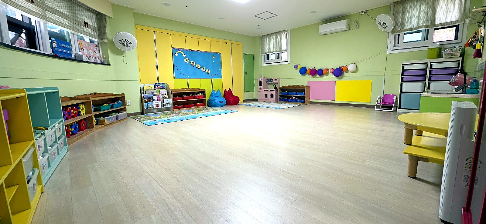

0~1세영아 전문 보육
80평넓고 밝은 공간
수제 이유식원에서 직접 조리
키즈노트아이의 하루 공유
아이의 하루를 알아보세요
자주 묻는 질문 처음 만나는 웰가
우리 아이들의 기록
활동소식 모두 보기 웰가의 작은 이야기


이현웰가어린이집은 몇 세 아이가 다니나요?
이현웰가어린이집은 0세와 1세 영아를 전문으로 보육합니다. 아이의 연령과 입소 희망 시기를 알려주시면 현재 입소 가능 여부를 안내해 드립니다.
입소 상담하기이현웰가어린이집 식단에 생선구이가 매주 나오나요?
네. 일반식 식단에 매주 생선구이를 포함해 제공합니다. 2026년 10월 식단에는 생선구이와 순살고등어구이가 기재되어 있습니다. 실제 제공일과 식재료는 원 운영 및 수급 상황에 따라 달라질 수 있습니다.
생선구이 안내 보기부모님은 아이의 하루를 어떻게 알 수 있나요?
키즈노트를 통해 식사량, 낮잠, 배변, 컨디션, 놀이활동과 사진, 공지사항을 공유합니다. 구체적인 기록과 소통 방식은 하루일과 페이지와 입소 상담에서 확인하실 수 있습니다.
하루일과와 키즈노트 보기아이의 새로운 시작우리 아이의 첫 어린이집,